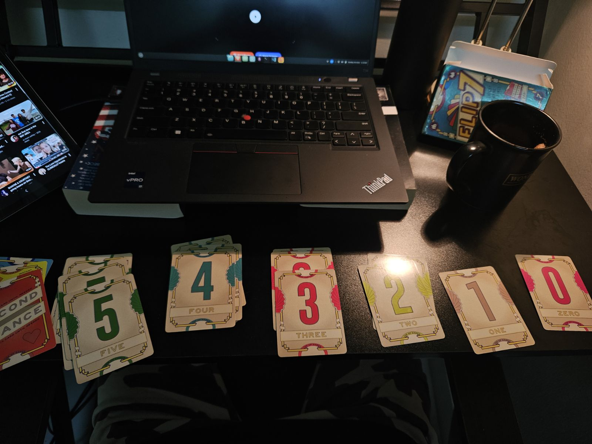
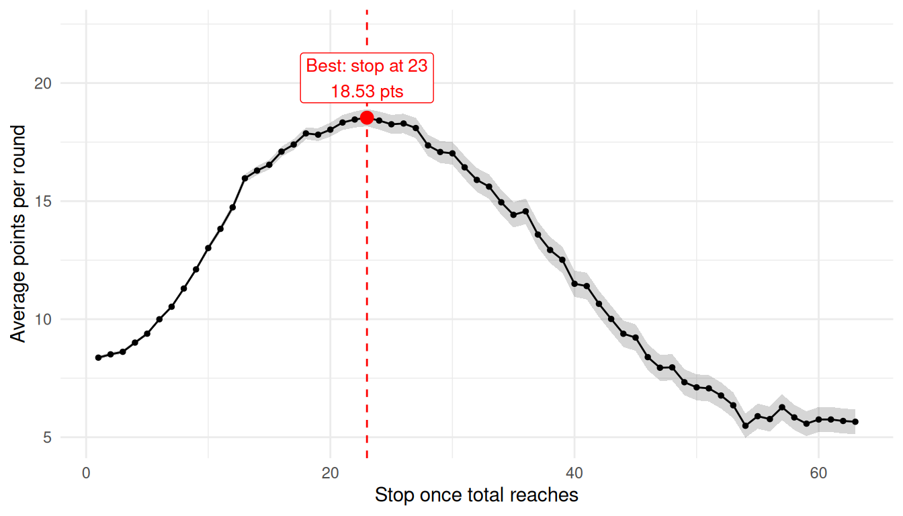

Being very late to the party when it comes to card games, I have since found a fascination towards them. Specifically, a card game called Flip 7, where the goal of the game is to flip 7 distinct cards, without busting.
As simple as it sounds, it’s a probabilistic game. Some would say luck, which it is still, since it’s kinda hard to keep track of how many cards are left. That’s what makes it interesting: the odds change with every card that leaves the deck.
How the game works
Everyone flips cards from a shared deck, one at a time. The deck has number cards from 0 to 12, and there are as many copies of each number as its value (one 1, two 2s, and so on). Flip a number you already hold and you bust, scoring nothing that round. Stop before that happens and you bank the total of your hand. Flip seven different numbers and you earn a bonus, and the first player to 200 points wins. There are also action cards, such as Freeze, Flip Three and Second Chance.

This project
To keep things simple, I only use the number cards 0 to 12 (79 cards) and leave out the bonus cards. The question I want to answer is: when to stop flipping?
play_round <-function(stop_at){# randomly shuffle deck d <-sample(deck)# initializing hand and total hand <-c() total <-0for (card in d){# the total reaches the limit, then stopif (total >= stop_at) return(total)# if pull the same card, then bustif (card %in% hand) return(0) hand <-c(hand, card) total <- total + card# whoever gets 7 distinct card gets an additional 15 pointsif (length(hand)==7) return(total +15) } total }
best <- results %>%slice_max(avg_points, n =1, with_ties =FALSE)results %>%ggplot(aes(stop_at, avg_points)) +geom_ribbon(aes(ymin = avg_points -2* se, ymax = avg_points +2* se),alpha =0.2) +geom_line() +geom_point(size =1) +geom_point(data = best, colour ="red", size =3) +geom_vline(xintercept = best$stop_at, linetype ="dashed", colour ="red") +geom_label(data = best,aes(label =paste0("Best: stop at ", stop_at, "\n", round(avg_points, 2), " pts")),vjust =-0.3, colour ="red", size =3.5 ) +expand_limits(y =max(results$avg_points) *1.2) +labs(x ="Stop once total reaches", y ="Average points per round") +theme_minimal(base_size =11)

# examining which card is around the same as stopping when point exceeds 1results %>%filter(stop_at %in%c(1, 40:50)) %>%select(stop_at, avg_points, se)